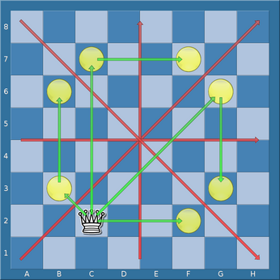

♖a8 an der Hauptdiagonalen.
Einige Transformationen für Figurenbezeichner werden hier definiert.
Eine diagonale Spiegelungstransformation, angewendet auf einen Figurenbezeichner, reflektiert jedes Feld auf das Feld gegenüber der Hauptdiagonalen.
|
|
Diagonale Spiegelung von ♖a8 an der Hauptdiagonalen.
|
Beispielsweise ist die diagonale Spiegelung von [⬜⬛][a-h1-2,f6,h7]
gleich [⬜⬛][a-b1-8,f6,g8].
Eine gegendiagonale Spiegelungstransformation, angewendet auf einen Figurenbezeichner, reflektiert jedes Feld auf das Feld gegenüber der a8-h1-Diagonalen.

|
Gegendiagonale Spiegelung von ♗b2 an der a8-h1-Diagonalen.
|
Beispielsweise ist die gegendiagonale Spiegelung von ♖a8 gleich
♖a8. Die gegendiagonale Spiegelung von
[♗♝][a1-8], kennzeichnend einen Läufer auf der a-Linie,
ist [♗♝][a-h8], kennzeichnend einen Läufer auf der achten
Reihe.
Eine vertikale Spiegelungstransformation, angewendet auf einen
Figurenbezeichner, reflektiert jedes Feld auf das Feld gegenüber der
vertikalen Halbierungslinie des Schachbretts. Beispielsweise ist die vertikale
Spiegelung von Uf6, kennzeichnend eine Figur auf f6, gleich
Uc6.

|
Vertikale Spiegelung von ♝f6 an der vertikalen Halbierungslinie.
|
Eine horizontale Spiegelungstransformation, angewendet auf einen
Figurenbezeichner, reflektiert jedes Feld auf das Feld gegenüber der
horizontalen Halbierungslinie des Schachbretts. Beispielsweise ist die horizontale
Spiegelung von Uf6 gleich Uf3.

|
Horizontale Spiegelung von ♝f6 an der horizontalen Halbierungslinie.
|
Eine diedrische Transformation, angewendet auf einen Figurenbezeichner,
ist eine Spiegelungstransformation gefolgt von einer Spiegelungstransformation
oder der identischen Transformation (es können statt der ersten
Spiegelungstransformation auch Rotationen von 90, 180, oder 270 Grad eingesetzt
werden). Es gibt 8 unterscheidbare diedrische Transformationen des
Schachbretts. Beispielsweise ist das Resultat einer Anwendung aller
diedrischen Transformationen auf den Figurenbezeichner
♕c2 die Menge der 8 Figurenbezeichner ♕c2,
♕b3, ♕b6, ♕c7, ♕f7,
♕g6, ♕g3 und ♕f2.
|  |
Diedrische Transformationen von ♕c2, beispielsweise:diagonale Spiegelung + diagonale Spiegelung (nach c2) diagonale Spiegelung + identische Transformation (nach b3) diagonale Spiegelung + horizontale Spiegelung (nach b6) horizontale Spiegelung + identische Transformation (nach c7) horizontale Spiegelung + vertikale Spiegelung (nach f7) gegendiagonale Spiegelung + identische Transformation (nach g6) gegendiagonale Spiegelung + horizontale Spiegelung (nach g3) vertikale Spiegelung + identische Transformation (nach f2) |
Eine einschrittige rechtsschiebende Transformation, angewendet auf einen Figurenbezeichner, verschiebt jedes Feld in der Feldermenge ein Feld nach rechts. Ist ein Feld bereits auf dem rechten Brettrand, so wird es von der Feldermenge entfernt. Ein Feld auf dem linken Brettrand ist auch wieder in der neuen Menge enthalten.
Beispielsweise ist die einschrittige rechtsschiebende Transformation von
♕d4 gleich ♕e4. Die einschrittige rechtsschiebende
Transformation von ♕[c2,h2] ist ♕d2. Die
einschrittige rechtsschiebende Transformation von ♕[a2,c2,h2] ist
♕[a2,b2,d2].
Die Definitionen der einschrittigen linksschiebenden Transformation, einschrittigen hochschiebenden Transformation, sowie der einschrittigen runterschiebenden Transformation, sind analog zur einschrittigen rechtsschiebenden Transformation. Die Randfelderbesonderheiten sind in der enstprechenden Veränderung zu sehen.
Eine Rechtswärtstransformation ist eine Hintereinanderausführung von
Null oder mehr einstelligen rechtsschiebenden Transformationen. Beispielsweise
ergibt die drei aufeinanderfolgenden einstelligen rechtsschiebenden
Transformationen umfassende Rechtswärtstransformation von ♕a4
die Menge ♕[a4,b4,c4,d4], denn die Felder am linken Brettrand
sind auch in der neuen Menge enthalten. Das Resultat der Anwendung dieser
Rechtswärtstransformation auf ♕d4 ergibt ♕g4.
Die Definitionen der Linkswärtstransformation, Hochwärtstransformation, und Runterwärtstransformation sind entsprechend.
Eine horizontale Translation ist entweder eine Linkswärtstransformation oder eine Rechtswärtstransformation. Eine vertikale Translation ist entweder eine Runterwärtstransformation oder eine Hochwärtstransformation.
Eine hauptdiagonale Translation ist eine Folge von Null oder mehr Kombinationen aus einschrittiger Rechtswärtstransformation und einschrittiger Hochwärtstransformation. Eine gegendiagonale Translation ist eine Folge von Null oder mehr Kombinationen aus einschrittiger Rechtswärtstransformation und einschrittiger Runterwärtstransformation.
Eine Translation ist eine Transformation, die als Folge von Null oder
mehr horizontalen Translationen, gefolgt von Null oder mehr vertikalen
Translationen, ausgedrückt werden kann. Es gibt exakt eine Translation, die
ein gegebenes Feld auf ein anderes gegebenes Feld verschiebt. Eine mögliche
Translation von ♕[b3,c4] ist ♕[d4,e5].
Eine Farbwechseltransformation, angewendet auf einen Felderbezeichner,
wechselt die Farbe der Figurenmenge des Felderbezeichners, und wendet dann
eine horizontale Verschiebung auf den Figurenbezeichner an. Beispiel:
die Farbwechseltransformation angewendet auf [♖♝♟][a2,c2],
entweder ein weißer Turm, ein schwarzer Läufer, oder ein schwarzer Bauer auf
c2 oder a2, ergibt die Menge [♜♗♙][a7,c7].
Bestimmte Schlüsselwörter in einer Positionsliste spezifizieren, daß die Positionsliste eine Position filtert, wenn eine transformierte Positionsliste die Position gefiltert hat. Beispielsweise spezifiziert das Schlüsselwort :fliphorizontal, daß die Positionsliste dann eine Position filtert, wenn entweder die Ursprungspositionsliste diese Position filtert, oder wenn eine an der horizontalen Halbierungslinie gespiegelte Positionsliste diese Position filtert.
Eine Transformation einer Positionsliste geschieht, indem die Transformation auf alle in der Positionsliste enthaltenen Figurenbezeichner angewendet wird, und rekursiv eine Anwendungen dieser Transformation auch auf jede andere enthaltene Positionsliste erfolgt. Ist die Transformation eine Farbwechseltransformation, dann werden auch alle Schlüsselwörter :btm und :wtm gegeneinander ausgetauscht. Weiterhin werden alle Argumente des Schlüsselwortes :result enstprechend gedreht.
Als Beispiel betrachten wir die Positionsliste
(position ♖c2 ♗h8 :wtm)
Diese filtert jede Position mit Weiß am Zug und einem weißen Turm auf c2, sowie einen weißen Läufer auf h8. Das Resultat der Anwendung einer einstelligen Linkswärtstransformation auf diese Positionsliste ist diese neue Positionsliste:
(position ♖b2 ♗g8 :wtm)
die jede Position filtert mir einem weißen Turm auf b2, einem weißen Läufer auf g8, sowie Weiß am Zug.
In gleicher Weise ist das Resultat der Anwendung einer horizontalen Spiegelung auf diese Positionsliste die neue Liste:
(position ♖b8 ♗g1 :wtm)
Das Resultat einer Farbwechseltransformation auf
(position ♖b2 ♗g8 :wtm)
ist folglich
(position ♖b8 ♗g1 :btm)
Zur Erinnerung: Verschiebungen wiRKen in spezieller Weise mit einigen Randfeldern. Beispielsweise das Resultat der Anwendung einer einstelligen Hochwärtstransformation auf folgende Positionsliste
(position ♖[a1,a8,h1,a8])
ergibt die Positionsliste:
(position ♖[a1,a2,h1,h2])
Eine Transformationsmenge ist eine beliebige Menge von Transformationen. Eine Transformationsmenge angewendet auf eine Positionsliste ist die Menge aller Positionslisten als Resultat der Anwendung aller Transformationen in der Transformationsmenge auf die Positionsliste.
Jedes Transformationsschlüsselwort ist mit einer Transformationsmenge assoziiert, jede davon beinhaltet auch die identische Transformation.
Zu den Transformationsschlüsselwörtern siehe: Die Positionsliste: Transformationsschlüsselwörter.
(position ♖c3 ♛g3)
Diese Positionsliste filtert jede Position mit einem weißen Turn auf c3, und einer schwarzen Dame auf g3. Wir können das Schlüsselwort :shifthorizontal hinzufügen:
(position ♖c3 ♛g3 :shifthorizontal)
Die Menge der transformierten Positionslisten ist nun:
(position ♖c3 ♛g3)
(position ♖b3 ♛f3)
(position ♖a3 ♛e3)
(position ♖d3 ♛h3)
Eine Position wird mit der neuen Liste gefiltert, wenn es auf der dritten Reihe einen weißen Turm und eine schwarze Dame gibt, und der weiße Turm vier Felder links von der schwarzen Dame steht.
(position ♖c3 ♛g3 :shiftvertical)
In gleicher Weise filtert diese Positionsliste jede Position, in der sich ein weißer Turm auf der gleichen Reihe mit einer schwarzen Dame befindet, und der Turm auf der c-Linie steht, und die Dame auf der g-Linie.
(position ♖c3 ♛g3 :shift)
Diese Positionsliste filtert jede Position mit einem weißen Turm und einer schwarzen Dame auf der gleichen Reihe, so daß dieser Turm vier Felder links von der schwarzen Dame steht.
(position ♖c3 ♛g3 :fliphorizontal)
Diese Positionsliste filtert jede Position, in der entweder ein weißer Turm auf c3 und eine schwarze Dame auf g3 steht, oder ein weißer Turm auf c6 und eine schwarze Dame auf g6.
(position ♖c3 ♛g3 :flipdiagonal)
Diese Positionsliste filtert jede Position, in der entweder ein weißer Turm auf c3 und eine schwarze Dame auf g3 steht, oder ein weißer Turm auf c3 und eine schwarze Dame auf c7.
(position ♖c3 ♛g3 :flip)
Diese Positionsliste filtert jede Position, in der ein weißer Turm hinter einem weißen Bauern auf der c-Linie steht.
(position ♙c2 ♖c1 :shiftvertical)
Aufgrund der Weise wie Randfelder behandelt werden filtert dies Positionen, in denen beispielsweise ein weißer Turm auf c2 steht aund ein weißer Bauer auf c7.
Um Positionen zu filtern, in denen ein weißer Turm hinter einem weißen Bauern aud der gleichen Linie steht, verwenden wir:
(position ♙c2 ♖c1 :shift)
Wenn Merhfachtransformationsschlüsselwörter vorkommen, dann besteht die
assoziierte Transformationsmenge aus jeder Transformation, die als
Hintereinanderausführung von Transformationen aus der entsprechenden
Transformationsmenge ausgedrückt werden kann. Diese Fähigkeit wird meist
dann angewandt, wenn nach einer Figurenanordnung gesucht wird, die
irgendwo auf dem Schachbrett stehen kann, möglicherweise gedeht oder
gespiegelt; das Hinzufügen von :shift :flip
zur Positionsliste ermöglicht dies.
Beispiel: die Positionsliste
(position ♘d4 ♚f3 :shift :flip)
filtert jede Position, in der ein weißer Springer einen schwarzen König angreift, während
(position ♘d4 ♚f3 :shift :flip :flipcolor)
jede Position filtert, in der ein Springer einen gegnerischen König angreift.
Das letzte Beispiel kann jedoch effizienter formuliert werden kann:
(position :attackcount ♘ ♚ 1 unlimited :flipcolor)